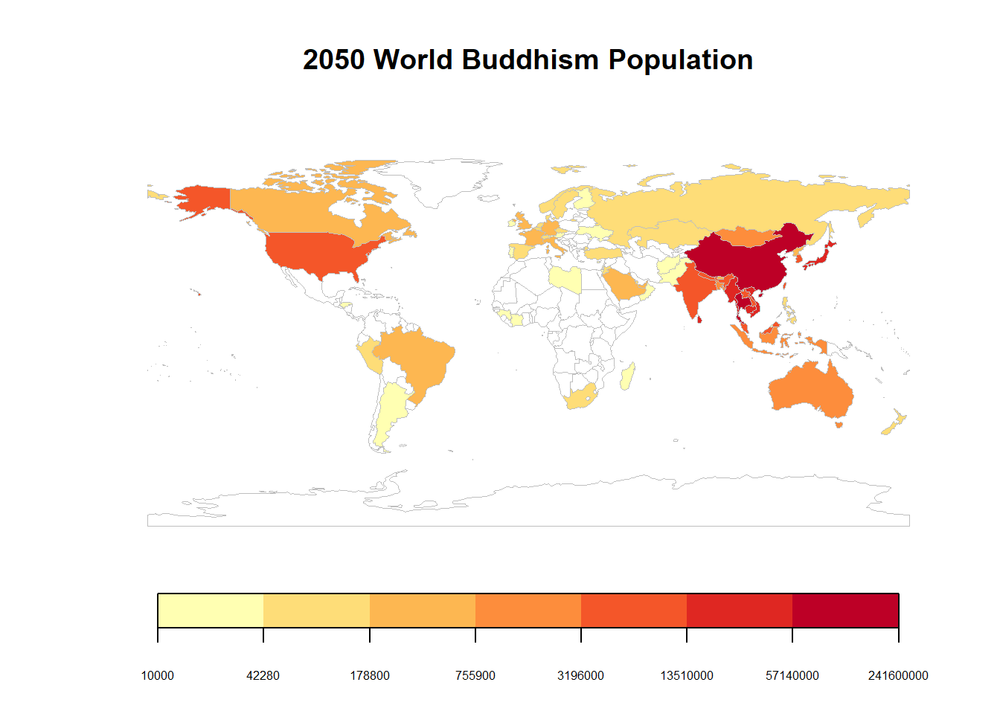
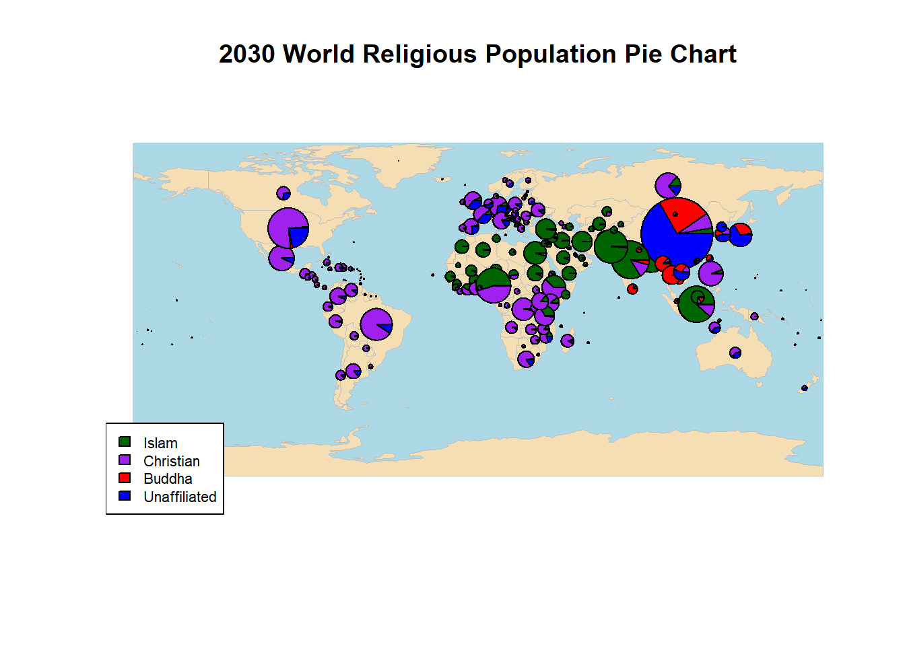
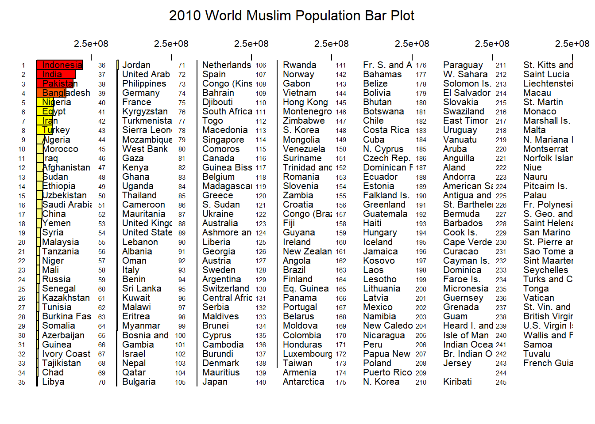
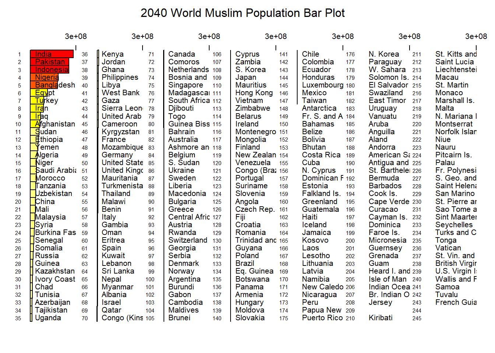
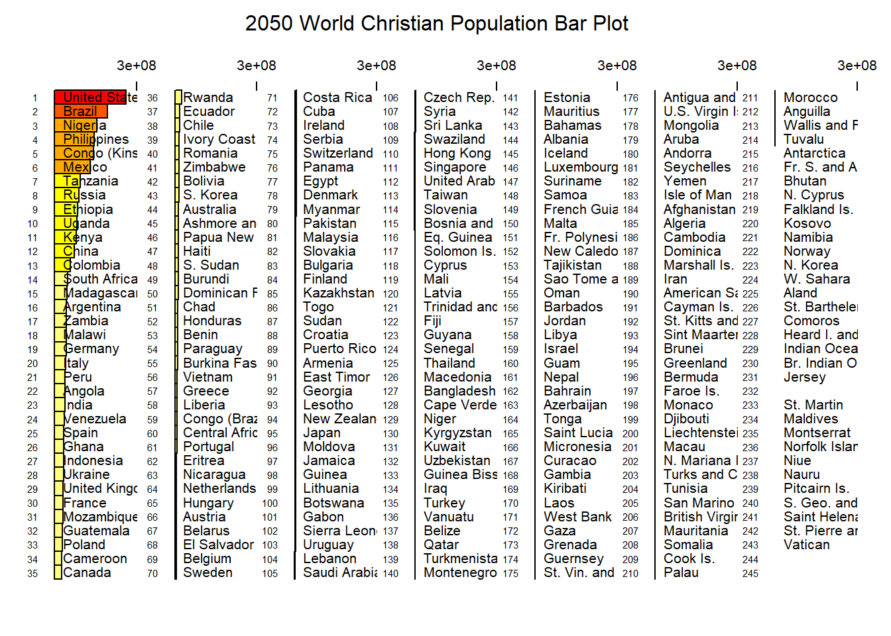

Evolution of Religious Population
Visualizing the Prediction of Major Religious Population Changing From 2010 to 2050
Wang, Yifan
Introduction
With the advancement in science and the spreading of secularism, the problem of the necessaries of religions arises. Especially in younger generations, the ratio of people identified as believers stays low. In 2013, for example, only 9.6% of the Jewish population in the states are between age 18-24 while 11.7% of the U.S. population falls into the same age interval (Saxe and Tighe, 2013). And at the same time 25.6% of Jewish community are older than 65 years old while 19.2% of the U.S. population falls into the age section(Saxe and Tighe, 2013).
This project aims to provide a visualization of the changing in the religious and unreligious population to answer the following questions:
- Which religion would experience the most rapid increasing of its follower group in the coming decades and
- How would the spatial distribution of the religious population for different religions vary in the future.
The hypothesis towards this research is that religious population for all the major religions will increase while the community of skeptics would shrink. And regions with rapid populaion incresement may boost their local dominate religion’s population. With the data collected by the Global Religious Future project (http://globalreligiousfutures.org), the evolution, from the year 2010 to 2050, in the population of three major religions (i.e. Christianism, Islam and Buddhism) around the world is processed and displayed. The religious unaffiliated population, in addition, is visualized as well. In this project, a series of maps and graphs were produced to show the trend of the evolution of the religious population. With the result from the data processing, Islam would experience the most obvious increasing in the number of believers from now to the year 2050. While Buddhism and Christianity communities generally remain static in the coming decades. At the same time, the coming decades will witness the decreasing of the religious unaffiliated population comparing to the general trend of population growth.
“Religion, it was thought, would thin out from its more robust, supernaturalist forms or die out altogether. But the theory that technological advancement brings inevitable secularization is now being scrapped or radically rethought.” ~ Timothy Keller, < the Reason for God >
Materials and Methods
Using download.file() function to download the surveyed and estimated population for the believer community of
- Islam
- Christianity
- Buddhism
- Religiously Unaffiliated
from the The Global Religious Future Project. You can visit the Data Explorer for data about other religions.
Packages
library(dplyr)
library(tidyr)
library(data.table)
library(rworldmap)
library(ggplot2)
library(maps)
library(spocc)
library(maptools)
library(RColorBrewer)
library(jsonlite)
library(geojsonio)
library(leaflet)
library(mapplots)
knitr::opts_chunk$set(cache = TRUE)Data Retrieving
The dataset downloaded is the survey result in 234 countries and predictions made upon them (check http://globalreligiousfutures.org/explorer/about-grf-data for more information). For each of the three representative religions, the number of believers in the year 2010, 2020, 2030, 2040 and 2050 is separately stored and downloaded in different datasets. The three religions mentioned above were selected to show the general trend of the variation of the religious population since that comparing to other religions that have large believer community, these three beliefs were more spread over the world so that could better represent the religious population community despite factors like politic or local culture.
The code following the download command read the data from the downloaded CSV file and create a data frame named as “Religion_Year” (e.g., Islam_2010) for every single dataset. The “skip” and “nrow” factor in the read.csv2() function serve to skip the description and space lines in the original file.
Islam
## download the world Islam population data for 2010
download.file("http://globalreligiousfutures.org/csv/22411", "muslim10.csv")
m10 <- readLines("muslim10.csv")
islam_2010 <- read.csv2(text = m10, sep = ",", header = FALSE, skip = 11, col.names = c("Country_Code",
"Country", "Religion_Population"), nrows = length(m10) - 16)
## download the world Islam population data for 2020
download.file("http://globalreligiousfutures.org/csv/21689", "muslim20.csv")
m20 <- readLines("muslim20.csv")
islam_2020 <- read.csv2(text = m20, sep = ",", header = FALSE, skip = 14, col.names = c("Country_Code",
"Country", "Religion_Population"), nrows = length(m20) - 17)
## download the world Islam population data for 2030
download.file("http://globalreligiousfutures.org/csv/21688", "muslim30.csv")
m30 <- readLines("muslim30.csv")
islam_2030 <- read.csv2(text = m30, sep = ",", header = FALSE, skip = 11, col.names = c("Country_Code",
"Country", "Religion_Population"), nrows = length(m30) - 14)
## download the world Islam population data for 2040
download.file("http://globalreligiousfutures.org/csv/21686", "muslim40.csv")
m40 <- readLines("muslim40.csv")
islam_2040 <- read.csv2(text = m40, sep = ",", header = FALSE, skip = 14, col.names = c("Country_Code",
"Country", "Religion_Population"), nrows = length(m40) - 17)
## download the world Islam population data for 2050
download.file("http://globalreligiousfutures.org/csv/21662", "muslim50.csv")
m50 <- readLines("muslim50.csv")
islam_2050 <- read.csv2(text = m50, sep = ",", header = FALSE, skip = 3, col.names = c("Country_Code",
"Country", "Religion_Population"), nrows = length(m50) - 6)Christianity
## download the world Christianity population data for 2010
download.file("http://globalreligiousfutures.org/csv/23086", "crs10.csv")
c10 <- readLines("crs10.csv")
chris_2010 <- read.csv2(text = c10,
sep = ",",
header = FALSE,
skip = 14,
col.names = c("Country_Code","Country","Religion_Population"),
nrows = length(c10))
## download the world Christianity population data for 2020
download.file("http://globalreligiousfutures.org/csv/23071", "crs20.csv")
c20 <- readLines("crs20.csv")
chris_2020 <- read.csv2(text = c20,
sep = ",",
header = FALSE,
skip = 11,
col.names = c("Country_Code","Country","Religion_Population"),
nrows = length(c20) - 14)
## download the world Christianity population data for 2030
download.file("http://globalreligiousfutures.org/csv/23072", "crs30.csv")
c30 <- readLines("crs30.csv")
chris_2030 <- read.csv2(text = c30,
sep = ",",
header = FALSE,
skip = 11,
col.names = c("Country_Code","Country","Religion_Population"),
nrows = length(c30) - 14)
## download the world Christianity population data for 2040
download.file("http://globalreligiousfutures.org/csv/23073", "crs40.csv")
c40 <- readLines("crs40.csv")
chris_2040 <- read.csv2(text = c40,
sep = ",",
header = FALSE,
skip = 11,
col.names = c("Country_Code","Country","Religion_Population"),
nrows = length(c40) - 14)
## download the world Christianity population data for 2050
download.file("http://globalreligiousfutures.org/csv/23074", "crs50.csv")
c50 <- readLines("crs50.csv")
chris_2050 <- read.csv2(text = c50,
sep = ",",
header = FALSE,
skip = 11,
col.names = c("Country_Code","Country","Religion_Population"),
nrows = length(c50) - 14)Buddahism
## download the world Buddahism population data for 2010
download.file("http://globalreligiousfutures.org/csv/22196", "buda10.csv")
b10 <- readLines("buda10.csv")
buddha_2010 <- read.csv2(text = b10,
sep = ",",
header = FALSE,
skip = 11,
col.names = c("Country_Code","Country","Religion_Population"),
nrows = length(b10) - 16)
## download the world Buddahism population data for 2020
download.file("http://globalreligiousfutures.org/csv/22885", "buda20.csv")
b20 <- readLines("buda20.csv")
buddha_2020 <- read.csv2(text = b20,
sep = ",",
header = FALSE,
skip = 11,
col.names = c("Country_Code","Country","Religion_Population"),
nrows = length(b20) - 14)
## download the world Buddahism population data for 2030
download.file("http://globalreligiousfutures.org/csv/23075", "buda30.csv")
b30 <- readLines("buda30.csv")
buddha_2030 <- read.csv2(text = b30,
sep = ",",
header = FALSE,
skip = 11,
col.names = c("Country_Code","Country","Religion_Population"),
nrows = length(b30) - 16)
## download the world Buddahism population data for 2040
download.file("http://globalreligiousfutures.org/csv/23076", "buda40.csv")
b40 <- readLines("buda40.csv")
buddha_2040 <- read.csv2(text = b40,
sep = ",",
header = FALSE,
skip = 11,
col.names = c("Country_Code","Country","Religion_Population"),
nrows = length(b40) - 14)
## download the world Buddahism population data for 2050
download.file("http://globalreligiousfutures.org/csv/23077", "buda50.csv")
b50 <- readLines("buda50.csv")
buddha_2050 <- read.csv2(text = b50,
sep = ",",
header = FALSE,
skip = 11,
col.names = c("Country_Code","Country","Religion_Population"),
nrows = length(b50) - 14)Religiously Unaffiliated
## download the world religious unaffiliated population data for 2010
download.file("http://globalreligiousfutures.org/csv/23117", "unaf10.csv")
u10 <- readLines("unaf10.csv")
unaffiliated_2010 <- read.csv2(text = u10,
sep = ",",
header = FALSE,
skip = 11,
col.names = c("Country_Code","Country","Religion_Population"),
nrows = length(u10) - 14)
## download the world religious unaffiliated population data for 2020
download.file("http://globalreligiousfutures.org/csv/23079", "unaf20.csv")
u20 <- readLines("unaf20.csv")
unaffiliated_2020 <- read.csv2(text = u20,
sep = ",",
header = FALSE,
skip = 11,
col.names = c("Country_Code","Country","Religion_Population"),
nrows = length(u20) - 14)
## download the world religious unaffiliated population data for 2030
download.file("http://globalreligiousfutures.org/csv/23080", "unaf30.csv")
u30 <- readLines("unaf30.csv")
unaffiliated_2030 <- read.csv2(text = u30,
sep = ",",
header = FALSE,
skip = 11,
col.names = c("Country_Code","Country","Religion_Population"),
nrows = length(u30) - 14)
## download the world religious unaffiliated population data for 2040
download.file("http://globalreligiousfutures.org/csv/23081", "unaf40.csv")
u40 <- readLines("unaf40.csv")
unaffiliated_2040 <- read.csv2(text = u40,
sep = ",",
header = FALSE,
skip = 11,
col.names = c("Country_Code","Country","Religion_Population"),
nrows = length(u40) - 14)
## download the world religious unaffiliated population data for 2050
download.file("http://globalreligiousfutures.org/csv/23082", "unaf50.csv")
u50 <- readLines("unaf50.csv")
unaffiliated_2050 <- read.csv2(text = u50,
sep = ",",
header = FALSE,
skip = 11,
col.names = c("Country_Code","Country","Religion_Population"),
nrows = length(u50) - 14)Data Processing
The data processing for each religion is showed in this section.
Spatial Polygon Data Frame
The column of ISO code for each country is first stored as a character variable, and the population column is stored separately as a numeric variable. Then these two sets of values are joined together into a data frame.
The joinCountryData2Map function turns the data frame into a spatial polygon data frame by specifying the “joincode”, which is the ISO2 code in our scenario.
Islam_2010_iso <- as.character(islam_2010$Country_Code)
Islam_2010_Population <- as.numeric(gsub(",","",as.character(islam_2010$Religion_Population)))
islam_2010_plot <- joinCountryData2Map(data.frame(country_iso = Islam_2010_iso,
value = Islam_2010_Population),
joinCode = "ISO2",
nameJoinColumn = "country_iso")## 224 codes from your data successfully matched countries in the map
## 11 codes from your data failed to match with a country code in the map
## 17 codes from the map weren't represented in your datachris_2010_iso <- as.character(chris_2010$Country_Code)
chris_2010_Population <- as.numeric(gsub(",","",as.character(chris_2010$Religion_Population)))
chris_2010_plot <- joinCountryData2Map(data.frame(country_iso = chris_2010_iso,
value = chris_2010_Population),
joinCode = "ISO2",
nameJoinColumn = "country_iso")## 1120 codes from your data successfully matched countries in the map
## 78 codes from your data failed to match with a country code in the map
## 17 codes from the map weren't represented in your databuddha_2010_iso <- as.character(buddha_2010$Country_Code)
buddha_2010_Population <- as.numeric(gsub(",","",as.character(buddha_2010$Religion_Population)))
buddha_2010_plot <- joinCountryData2Map(data.frame(country_iso = buddha_2010_iso,
value = buddha_2010_Population),
joinCode = "ISO2",
nameJoinColumn = "country_iso")## 224 codes from your data successfully matched countries in the map
## 11 codes from your data failed to match with a country code in the map
## 17 codes from the map weren't represented in your dataunaffiliated_2010_iso <- as.character(unaffiliated_2010$Country_Code)
unaffiliated_2010_Population <- as.numeric(gsub(",","",as.character(unaffiliated_2010$Religion_Population)))
unaffiliated_2010_plot <- joinCountryData2Map(data.frame(country_iso = unaffiliated_2010_iso,
value = unaffiliated_2010_Population),
joinCode = "ISO2",
nameJoinColumn = "country_iso")## 221 codes from your data successfully matched countries in the map
## 16 codes from your data failed to match with a country code in the map
## 20 codes from the map weren't represented in your dataIslam_2020_iso <- as.character(islam_2020$Country_Code)
Islam_2020_Population <- as.numeric(gsub(",","",as.character(islam_2020$Religion_Population)))
islam_2020_plot <- joinCountryData2Map(data.frame(country_iso = Islam_2020_iso,
value = Islam_2020_Population),
joinCode = "ISO2",
nameJoinColumn = "country_iso")## 224 codes from your data successfully matched countries in the map
## 10 codes from your data failed to match with a country code in the map
## 17 codes from the map weren't represented in your datachris_2020_iso <- as.character(chris_2020$Country_Code)
chris_2020_Population <- as.numeric(gsub(",","",as.character(chris_2020$Religion_Population)))
chris_2020_plot <- joinCountryData2Map(data.frame(country_iso = chris_2020_iso,
value = chris_2020_Population),
joinCode = "ISO2",
nameJoinColumn = "country_iso")## 224 codes from your data successfully matched countries in the map
## 13 codes from your data failed to match with a country code in the map
## 17 codes from the map weren't represented in your databuddha_2020_iso <- as.character(buddha_2020$Country_Code)
buddha_2020_Population <- as.numeric(gsub(",","",as.character(buddha_2020$Religion_Population)))
buddha_2020_plot <- joinCountryData2Map(data.frame(country_iso = buddha_2020_iso,
value = buddha_2020_Population),
joinCode = "ISO2",
nameJoinColumn = "country_iso")## 224 codes from your data successfully matched countries in the map
## 13 codes from your data failed to match with a country code in the map
## 17 codes from the map weren't represented in your dataunaffiliated_2020_iso <- as.character(unaffiliated_2020$Country_Code)
unaffiliated_2020_Population <- as.numeric(gsub(",","",as.character(unaffiliated_2020$Religion_Population)))
unaffiliated_2020_plot <- joinCountryData2Map(data.frame(country_iso = unaffiliated_2020_iso,
value = unaffiliated_2020_Population),
joinCode = "ISO2",
nameJoinColumn = "country_iso")## 224 codes from your data successfully matched countries in the map
## 13 codes from your data failed to match with a country code in the map
## 17 codes from the map weren't represented in your dataIslam_2030_iso <- as.character(islam_2030$Country_Code)
Islam_2030_Population <- as.numeric(gsub(",","",as.character(islam_2030$Religion_Population)))
islam_2030_plot <- joinCountryData2Map(data.frame(country_iso = Islam_2030_iso,
value = Islam_2030_Population),
joinCode = "ISO2",
nameJoinColumn = "country_iso")## 224 codes from your data successfully matched countries in the map
## 13 codes from your data failed to match with a country code in the map
## 17 codes from the map weren't represented in your datachris_2030_iso <- as.character(chris_2030$Country_Code)
chris_2030_Population <- as.numeric(gsub(",","",as.character(chris_2030$Religion_Population)))
chris_2030_plot <- joinCountryData2Map(data.frame(country_iso = chris_2030_iso,
value = chris_2030_Population),
joinCode = "ISO2",
nameJoinColumn = "country_iso")## 224 codes from your data successfully matched countries in the map
## 13 codes from your data failed to match with a country code in the map
## 17 codes from the map weren't represented in your databuddha_2030_iso <- as.character(buddha_2030$Country_Code)
buddha_2030_Population <- as.numeric(gsub(",","",as.character(buddha_2030$Religion_Population)))
buddha_2030_plot <- joinCountryData2Map(data.frame(country_iso = buddha_2030_iso,
value = buddha_2030_Population),
joinCode = "ISO2",
nameJoinColumn = "country_iso")## 223 codes from your data successfully matched countries in the map
## 12 codes from your data failed to match with a country code in the map
## 18 codes from the map weren't represented in your dataunaffiliated_2030_iso <- as.character(unaffiliated_2030$Country_Code)
unaffiliated_2030_Population <- as.numeric(gsub(",","",as.character(unaffiliated_2030$Religion_Population)))
unaffiliated_2030_plot <- joinCountryData2Map(data.frame(country_iso = unaffiliated_2030_iso,
value = unaffiliated_2030_Population),
joinCode = "ISO2",
nameJoinColumn = "country_iso")## 224 codes from your data successfully matched countries in the map
## 13 codes from your data failed to match with a country code in the map
## 17 codes from the map weren't represented in your dataIslam_2040_iso <- as.character(islam_2040$Country_Code)
Islam_2040_Population <- as.numeric(gsub(",","",as.character(islam_2040$Religion_Population)))
islam_2040_plot <- joinCountryData2Map(data.frame(country_iso = Islam_2040_iso,
value = Islam_2040_Population),
joinCode = "ISO2",
nameJoinColumn = "country_iso")## 224 codes from your data successfully matched countries in the map
## 10 codes from your data failed to match with a country code in the map
## 17 codes from the map weren't represented in your datachris_2040_iso <- as.character(chris_2040$Country_Code)
chris_2040_Population <- as.numeric(gsub(",","",as.character(chris_2040$Religion_Population)))
chris_2040_plot <- joinCountryData2Map(data.frame(country_iso = chris_2040_iso,
value = chris_2040_Population),
joinCode = "ISO2",
nameJoinColumn = "country_iso")## 224 codes from your data successfully matched countries in the map
## 13 codes from your data failed to match with a country code in the map
## 17 codes from the map weren't represented in your databuddha_2040_iso <- as.character(buddha_2040$Country_Code)
buddha_2040_Population <- as.numeric(gsub(",","",as.character(buddha_2040$Religion_Population)))
buddha_2040_plot <- joinCountryData2Map(data.frame(country_iso = buddha_2040_iso,
value = buddha_2040_Population),
joinCode = "ISO2",
nameJoinColumn = "country_iso")## 224 codes from your data successfully matched countries in the map
## 13 codes from your data failed to match with a country code in the map
## 17 codes from the map weren't represented in your dataunaffiliated_2040_iso <- as.character(unaffiliated_2040$Country_Code)
unaffiliated_2040_Population <- as.numeric(gsub(",","",as.character(unaffiliated_2040$Religion_Population)))
unaffiliated_2040_plot <- joinCountryData2Map(data.frame(country_iso = unaffiliated_2040_iso,
value = unaffiliated_2040_Population),
joinCode = "ISO2",
nameJoinColumn = "country_iso")## 224 codes from your data successfully matched countries in the map
## 13 codes from your data failed to match with a country code in the map
## 17 codes from the map weren't represented in your dataIslam_2050_iso <- as.character(islam_2050$Country_Code)
Islam_2050_Population <- as.numeric(gsub(",","",as.character(islam_2050$Religion_Population)))
islam_2050_plot <- joinCountryData2Map(data.frame(country_iso = Islam_2050_iso,
value = Islam_2050_Population),
joinCode = "ISO2",
nameJoinColumn = "country_iso")## 224 codes from your data successfully matched countries in the map
## 21 codes from your data failed to match with a country code in the map
## 17 codes from the map weren't represented in your datachris_2050_iso <- as.character(chris_2050$Country_Code)
chris_2050_Population <- as.numeric(gsub(",","",as.character(chris_2050$Religion_Population)))
chris_2050_plot <- joinCountryData2Map(data.frame(country_iso = chris_2050_iso,
value = chris_2050_Population),
joinCode = "ISO2",
nameJoinColumn = "country_iso")## 221 codes from your data successfully matched countries in the map
## 16 codes from your data failed to match with a country code in the map
## 20 codes from the map weren't represented in your databuddha_2050_iso <- as.character(buddha_2050$Country_Code)
buddha_2050_Population <- as.numeric(gsub(",","",as.character(buddha_2050$Religion_Population)))
buddha_2050_plot <- joinCountryData2Map(data.frame(country_iso = buddha_2050_iso,
value = buddha_2050_Population),
joinCode = "ISO2",
nameJoinColumn = "country_iso")## 221 codes from your data successfully matched countries in the map
## 16 codes from your data failed to match with a country code in the map
## 20 codes from the map weren't represented in your dataunaffiliated_2050_iso <- as.character(unaffiliated_2050$Country_Code)
unaffiliated_2050_Population <- as.numeric(gsub(",","",as.character(unaffiliated_2050$Religion_Population)))
unaffiliated_2050_plot <- joinCountryData2Map(data.frame(country_iso = unaffiliated_2050_iso,
value = unaffiliated_2050_Population),
joinCode = "ISO2",
nameJoinColumn = "country_iso")## 221 codes from your data successfully matched countries in the map
## 16 codes from your data failed to match with a country code in the map
## 20 codes from the map weren't represented in your dataAssembling
This section provides the data frame for line chart and other statistical graphs. The raw data sets are copied and renamed the column of religion population to include the year for the merging operation. Five data frame are merged simultaneously by Reduce() function; the function provides a so-called “for-each” loop to iterate through all the data frames in the list() function.
Islam_2020_Population <- as.numeric(gsub(",","",as.character(islam_2020$Religion_Population)))
Islam_2030_Population <- as.numeric(gsub(",","",as.character(islam_2030$Religion_Population)))
Islam_2040_Population <- as.numeric(gsub(",","",as.character(islam_2040$Religion_Population)))
islam_total_2010 <- sum(Islam_2010_Population, na.rm = TRUE)
islam_total_2020 <- sum(Islam_2020_Population, na.rm = TRUE)
islam_total_2030 <- sum(Islam_2030_Population, na.rm = TRUE)
islam_total_2040 <- sum(Islam_2040_Population, na.rm = TRUE)
islam_total_2050 <- sum(Islam_2050_Population, na.rm = TRUE)
chris_2020_Population <- as.numeric(gsub(",","",as.character(chris_2020$Religion_Population)))
chris_2030_Population <- as.numeric(gsub(",","",as.character(chris_2030$Religion_Population)))
chris_2040_Population <- as.numeric(gsub(",","",as.character(chris_2040$Religion_Population)))
chris_total_2020 <- sum(chris_2020_Population, na.rm = TRUE)
chris_total_2030 <- sum(chris_2030_Population, na.rm = TRUE)
chris_total_2040 <- sum(chris_2040_Population, na.rm = TRUE)
chris_total_2050 <- sum(chris_2050_Population, na.rm = TRUE)
buddha_2020_Population <- as.numeric(gsub(",","",as.character(buddha_2020$Religion_Population)))
buddha_2030_Population <- as.numeric(gsub(",","",as.character(buddha_2030$Religion_Population)))
buddha_2040_Population <- as.numeric(gsub(",","",as.character(buddha_2040$Religion_Population)))
buddha_total_2010 <- sum(buddha_2010_Population, na.rm = TRUE)
buddha_total_2020 <- sum(buddha_2020_Population, na.rm = TRUE)
buddha_total_2030 <- sum(buddha_2030_Population, na.rm = TRUE)
buddha_total_2040 <- sum(buddha_2040_Population, na.rm = TRUE)
buddha_total_2050 <- sum(buddha_2050_Population, na.rm = TRUE)
unaffiliated_2020_Population <- as.numeric(gsub(",","",as.character(unaffiliated_2020$Religion_Population)))
unaffiliated_2030_Population <- as.numeric(gsub(",","",as.character(unaffiliated_2030$Religion_Population)))
unaffiliated_2040_Population <- as.numeric(gsub(",","",as.character(unaffiliated_2040$Religion_Population)))
unaffiliated_total_2010 <- sum(unaffiliated_2010_Population, na.rm = TRUE)
unaffiliated_total_2020 <- sum(unaffiliated_2020_Population, na.rm = TRUE)
unaffiliated_total_2030 <- sum(unaffiliated_2030_Population, na.rm = TRUE)
unaffiliated_total_2040 <- sum(unaffiliated_2040_Population, na.rm = TRUE)
unaffiliated_total_2050 <- sum(unaffiliated_2050_Population, na.rm = TRUE)
#make table
total_1050 <- matrix(c(islam_total_2010,chris_total_2020,buddha_total_2010,unaffiliated_total_2010,islam_total_2020,chris_total_2020,buddha_total_2020,unaffiliated_total_2020,islam_total_2030,chris_total_2030,buddha_total_2030,unaffiliated_total_2030,islam_total_2040,chris_total_2040,buddha_total_2040,unaffiliated_total_2040,islam_total_2050,chris_total_2050,buddha_total_2050,unaffiliated_total_2050), ncol = 4, byrow = TRUE)
colnames(total_1050) <- c("Islam", "Christianity", "Buddhism", "Religious Unaffiliated")
rownames(total_1050) <- c("2010", "2020", "2030", "2040", "2050")
total_1050 <- as.table(total_1050)
islam_evolusion <- c(islam_total_2010,islam_total_2020,islam_total_2030,islam_total_2040,islam_total_2050)
islam_2010_graph <- islam_2010
colnames(islam_2010_graph) <- c("Country_Code", "Country", "Religion_Population_2010")
islam_2020_graph <- islam_2020
colnames(islam_2020_graph) <- c("Country_Code", "Country", "Religion_Population_2020")
islam_2030_graph <- islam_2030
colnames(islam_2030_graph) <- c("Country_Code", "Country", "Religion_Population_2030")
islam_2040_graph <- islam_2040
colnames(islam_2040_graph) <- c("Country_Code", "Country", "Religion_Population_2040")
islam_2050_graph <- islam_2050
colnames(islam_2050_graph) <- c("Country_Code", "Country", "Religion_Population_2050")
islam_10_50 <- Reduce(function(x,y)
merge(x, y, by = "Country"),
list(islam_2010_graph, islam_2020_graph, islam_2030_graph, islam_2040_graph, islam_2050_graph))
chris_2010_graph <- chris_2010
colnames(chris_2010_graph) <- c("Country_Code", "Country", "Religion_Population_2010")
chris_2020_graph <- chris_2020
colnames(chris_2020_graph) <- c("Country_Code", "Country", "Religion_Population_2020")
chris_2030_graph <- chris_2030
colnames(chris_2030_graph) <- c("Country_Code", "Country", "Religion_Population_2030")
chris_2040_graph <- chris_2040
colnames(chris_2040_graph) <- c("Country_Code", "Country", "Religion_Population_2040")
chris_2050_graph <- chris_2050
colnames(chris_2050_graph) <- c("Country_Code", "Country", "Religion_Population_2050")
chris_10_50 <- Reduce(function(x,y)
merge(x, y, by = "Country"),
list(chris_2010_graph, chris_2020_graph, chris_2030_graph, chris_2040_graph, chris_2050_graph))
chris_20_50 <- Reduce(function(x,y)
merge(x, y, by = "Country"),
list(chris_2020_graph, chris_2030_graph, chris_2040_graph, chris_2050_graph))
buddha_2010_graph <- buddha_2010
colnames(buddha_2010_graph) <- c("Country_Code", "Country", "Religion_Population_2010")
buddha_2020_graph <- buddha_2020
colnames(buddha_2020_graph) <- c("Country_Code", "Country", "Religion_Population_2020")
buddha_2030_graph <- buddha_2030
colnames(buddha_2030_graph) <- c("Country_Code", "Country", "Religion_Population_2030")
buddha_2040_graph <- buddha_2040
colnames(buddha_2040_graph) <- c("Country_Code", "Country", "Religion_Population_2040")
buddha_2050_graph <- buddha_2050
colnames(buddha_2050_graph) <- c("Country_Code", "Country", "Religion_Population_2050")
buddha_10_50 <- Reduce(function(x,y)
merge(x, y, by = "Country"),
list(buddha_2010_graph, buddha_2020_graph, buddha_2030_graph, buddha_2040_graph, buddha_2050_graph))
unaffiliated_2010_graph <- unaffiliated_2010
colnames(unaffiliated_2010_graph) <- c("Country_Code", "Country", "Religion_Population_2010")
unaffiliated_2020_graph <- unaffiliated_2020
colnames(unaffiliated_2020_graph) <- c("Country_Code", "Country", "Religion_Population_2020")
unaffiliated_2030_graph <- unaffiliated_2030
colnames(unaffiliated_2030_graph) <- c("Country_Code", "Country", "Religion_Population_2030")
unaffiliated_2040_graph <- unaffiliated_2040
colnames(unaffiliated_2040_graph) <- c("Country_Code", "Country", "Religion_Population_2040")
unaffiliated_2050_graph <- unaffiliated_2050
colnames(unaffiliated_2050_graph) <- c("Country_Code", "Country", "Religion_Population_2050")
unaffiliated_10_50 <- Reduce(function(x,y)
merge(x, y, by = "Country"),
list(unaffiliated_2010_graph, unaffiliated_2020_graph, unaffiliated_2030_graph, unaffiliated_2040_graph, unaffiliated_2050_graph))Results
Choropleth
In this part, a simple choropleth visualization is performed. To save space, only the religious population in the year 2010 and 2050 is plotted in the choropleth to show a general trend of the country-scale distribution and the changing of the religious population.
The map is produced via “rworldmap” package, and the color is chosen from “RColorBrewer” package. The mapCountryData method is called to plot the spatial polygon data frame created. The legend of the map is created separately afterward using the addMapLegend function to make sure the numbers and letters could be controlled.
These graphs serve to show the spatial distribution of the population of different religions.
Islam
The choropleth graphs show a general stable spatial distribution of Islam while it is still noticeable that U.S. and western Europe Muslim population will experience almost the most apparent increasing. Following by Australia and South America countries (e.g., Brazile), who also show enormous expanding in their muslim community.
#Loading the Color Palette for Map
color1 <- brewer.pal(5,"YlOrRd")
# Plotting the Country Heat Map of Muslim Population in 2010
map1 <- mapCountryData(islam_2010_plot,
nameColumnToPlot = "value",
mapTitle = "2010 World Muslim Population",
catMethod = "logFixedWidth",
colourPalette = color1,
addLegend = FALSE)
#add legend
do.call(addMapLegend, c(map1,
legendLabels="all",
labelFontSize = 0.5,
legendIntervals = "page",
digits = 4,
sigFigs = 4
))
Country Heat Map of Muslim Population in 2010
# Plotting the Country Heat Map of Muslim Population in 2050
map2 <- mapCountryData(islam_2050_plot,
nameColumnToPlot = "value",
mapTitle = "2050 World Muslim Population",
catMethod = "logFixedWidth",
colourPalette = color1,
addLegend = FALSE)
do.call(addMapLegend, c(map2,legendLabels="all",labelFontSize = 0.5,legendIntervals = "page",digits = 4,sigFigs = 4))
Country Heat Map of Muslim Population in 2050
Christian
The following two plots show that Christianity population remains its spatial distribution in the coming decades while Canada and northern Europe countries will have a relatively slow increasing speed in their Christian people comparing to the other countries. It could be caused by the low birth rate in these areas and the general population growth in different places.
# Plotting the Country Heat Map of Christian Population in 2010
map2 <- mapCountryData(chris_2010_plot,
nameColumnToPlot = "value",
mapTitle = "2010 World Christian Population",
catMethod = "logFixedWidth",
colourPalette = color1,
addLegend = FALSE)
do.call(addMapLegend, c(map2,legendLabels="all",labelFontSize = 0.5,legendIntervals = "page",digits = 4,sigFigs = 4))# Plotting the Country Heat Map of Christian Population in 2050
map2 <- mapCountryData(chris_2050_plot,
nameColumnToPlot = "value",
mapTitle = "2050 World Christian Population",
catMethod = "logFixedWidth",
colourPalette = color1,
addLegend = FALSE)
do.call(addMapLegend, c(map2,legendLabels="all",labelFontSize = 0.5,legendIntervals = "page",digits = 4,sigFigs = 4))Buddhism
The Buddhism belief keeps its distribution and population in general, from the following graphs. The only changing could be noticed is that southern and eastern Europe countries seem to have the most obvious expanding in Buddhism population among neighbor regions. The static in the expanding could be related to the doctrine of Buddhism, which, unlike Christianity and Islam, does not consider missionary activity to be important in its belief system.
# Plotting the Country Heat Map of Buddhism Population in 2010
map2 <- mapCountryData(buddha_2010_plot,
nameColumnToPlot = "value",
mapTitle = "2010 World Buddhism Population",
catMethod = "logFixedWidth",
colourPalette = color1,
addLegend = FALSE)
do.call(addMapLegend, c(map2,legendLabels="all",labelFontSize = 0.5,legendIntervals = "page",digits = 4,sigFigs = 4))
Country Heat Map of Buddhism Population in 2010
# Plotting the Country Heat Map of Buddhism Population in 2050
map2 <- mapCountryData(buddha_2050_plot,
nameColumnToPlot = "value",
mapTitle = "2050 World Buddhism Population",
catMethod = "logFixedWidth",
colourPalette = color1,
addLegend = FALSE)
do.call(addMapLegend, c(map2,legendLabels="all",labelFontSize = 0.5,legendIntervals = "page",digits = 4,sigFigs = 4))
Country Heat Map of Buddhism Population in 2050
Religiously Unaffiiated
The non-religion population remains its distribution while Brazile seems to have an obvious increasement in its skeptic population.
# Plotting the Country Heat Map of Religious Unaffiiated Population in 2010
map2 <- mapCountryData(unaffiliated_2010_plot,
nameColumnToPlot = "value",
mapTitle = "2010 World Religiously Unaffiliated Population",
catMethod = "logFixedWidth",
colourPalette = color1,
addLegend = FALSE)
do.call(addMapLegend, c(map2,legendLabels="all",labelFontSize = 0.5,legendIntervals = "page",digits = 4,sigFigs = 4))
Country Heat Map of Religious Unaffiiated Population in 2010
# Plotting the Country Heat Map of Religious Unaffiiated Population in 2050
map2 <- mapCountryData(unaffiliated_2050_plot,
nameColumnToPlot = "value",
mapTitle = "2050 World Religiously Unaffiliated Population",
catMethod = "logFixedWidth",
colourPalette = color1,
addLegend = FALSE)
do.call(addMapLegend, c(map2,legendLabels="all",labelFontSize = 0.5,legendIntervals = "page",digits = 4,sigFigs = 4))
Country Heat Map of Religious Unaffiiated Population in 2050
Pie Chart
In this page, the pie chart representing the population proportion of different religion in each country from 2010 to 2050 is produced.
The population value in spatial polygon data frames for every religion in each year is retrieved and combined into a new spatial data frame. Then plotted via mapPies() function provided by the rworldmap package.
These pie charts aim to provide a country leveled proportion of the population of different religions. Also, the size of the circle in the graphs represents the number of population in each country, which helps to make the global population growth into the count.
These pie charts show a trend that religiously unaffiliated population is increasing in the coming decades, which, is contradicted to what Timothy Keller predicted in her book “The Reason for God.”
2010
#2010
pie_2010_plot <- islam_2010_plot
pie_2010_plot$Islam <- islam_2010_plot$value
pie_2010_plot$Christian <- chris_2010_plot$value
pie_2010_plot$Buddha <- buddha_2010_plot$value
pie_2010_plot$Unaffiliated <- unaffiliated_2010_plot$value
mapPies(pie_2010_plot,
nameZs = c('Islam','Christian','Buddha','Unaffiliated'),
zColours = c('dark green','purple','red','blue'),
oceanCol = 'light blue',
landCol = 'wheat',
symbolSize = 2.6)## symbolMaxSize= 7.2 maxSumValues= 1037890000 symbolScale= 0.0002234894
## List of 2
## $ x: num [1:100] -138 -138 -138 -139 -139 ...
## $ y: num [1:100] 66 67.2 68.4 69.6 70.7 ...title("2010 World Religious Population Pie Chart")
2020
#2020
pie_2020_plot <- islam_2020_plot
pie_2020_plot$Islam <- islam_2020_plot$value
pie_2020_plot$Christian <- chris_2020_plot$value
pie_2020_plot$Buddha <- buddha_2020_plot$value
pie_2020_plot$Unaffiliated <- unaffiliated_2020_plot$value
mapPies(pie_2020_plot,
nameZs = c('Islam','Christian','Buddha','Unaffiliated'),
zColours = c('dark green','purple','red','blue'),
oceanCol = 'light blue',
landCol = 'wheat',
symbolSize = 2.6)## symbolMaxSize= 7.2 maxSumValues= 1075220000 symbolScale= 0.0002195755
## List of 2
## $ x: num [1:100] -138 -138 -138 -139 -139 ...
## $ y: num [1:100] 66 67.2 68.4 69.6 70.7 ...title("2020 World Religious Population Pie Chart")2030
#2030
pie_2030_plot <- islam_2030_plot
pie_2030_plot$Islam <- islam_2030_plot$value
pie_2030_plot$Christian <- chris_2030_plot$value
pie_2030_plot$Buddha <- buddha_2030_plot$value
pie_2030_plot$Unaffiliated <- unaffiliated_2030_plot$value
mapPies(pie_2030_plot,
nameZs = c('Islam','Christian','Buddha','Unaffiliated'),
zColours = c('dark green','purple','red','blue'),
oceanCol = 'light blue',
landCol = 'wheat',
symbolSize = 2.6)## symbolMaxSize= 7.2 maxSumValues= 1081150000 symbolScale= 0.0002189725
## List of 2
## $ x: num [1:100] -138 -138 -138 -139 -139 ...
## $ y: num [1:100] 66 67.2 68.4 69.6 70.7 ...title("2030 World Religious Population Pie Chart")2040
pie_2040_plot <- islam_2040_plot
pie_2040_plot$Islam <- islam_2040_plot$value
pie_2040_plot$Christian <- chris_2040_plot$value
pie_2040_plot$Buddha <- buddha_2040_plot$value
pie_2040_plot$Unaffiliated <- unaffiliated_2040_plot$value
mapPies(pie_2040_plot,
nameZs = c('Islam','Christian','Buddha','Unaffiliated'),
zColours = c('dark green','purple','red','blue'),
oceanCol = 'light blue',
landCol = 'wheat',
symbolSize = 2.6)## symbolMaxSize= 7.2 maxSumValues= 1058490000 symbolScale= 0.0002213039
## List of 2
## $ x: num [1:100] -138 -138 -138 -139 -139 ...
## $ y: num [1:100] 66 67.2 68.4 69.6 70.7 ...title("2040 World Religious Population Pie Chart")
2050
#2050
pie_2050_plot <- islam_2050_plot
pie_2050_plot$Islam <- islam_2050_plot$value
pie_2050_plot$Christian <- chris_2050_plot$value
pie_2050_plot$Buddha <- buddha_2050_plot$value
pie_2050_plot$Unaffiliated <- unaffiliated_2050_plot$value
mapPies(pie_2050_plot,
nameZs = c('Islam','Christian','Buddha','Unaffiliated'),
zColours = c('dark green','purple','red','blue'),
oceanCol = 'light blue',
landCol = 'wheat',
symbolSize = 2.6)## symbolMaxSize= 7.2 maxSumValues= 1010750000 symbolScale= 0.00022647
## List of 2
## $ x: num [1:100] -138 -138 -138 -139 -139 ...
## $ y: num [1:100] 66 67.2 68.4 69.6 70.7 ...title("2050 World Religious Population Pie Chart")Bar Plot
Using barplotCountryData() function in the rworldmap package, the bar plot representing the relative religious population for each country is created in this page. These bar plots serve to answer the question that whether the country ranking of the population in a specific religion changed from 2010 to 2050.
Islam
2010

2020

2030
2040

2050

Christianity
2010
2020

2030
2040

2050

Buddhism
2010
2020

2030
2040

2050
Religiously Unaffiliated
2010

2020

2030

2040

2050

Line Chart
**TO BE CONTINUED
Islam
Christianity
Buddhism
Unaffiliated
Percentage Pie Chart
**TO BE CONTINUED
Conclusions
In conclusion, Islam world would experience the most evident increasing in its follower community. Which will make it have a comparable population with the dominant religion, Christianity. Also, the following decades may witness the expanding of the territory of Islam, which is most likely to be happening in western Europe, western and northern Africa and Russia. Unlike what Timothy Keller had predicted, atheist population keeps increasing in almost the entire world except for China. The most apparent decline in the proportion of non-religion population may happen in the biggest non-religion country in 2010, China, where will witness the growth of Christianity, Islam and Buddhism population. As for Buddhism, which is not famous for its missionary stories, remains its territory and population in eastern Asia.
Furthermore, it worths broader study about the expanding of different belief ideas. From Abrahamic religions to the Hindu-originated religion, then the Marxism, the spatial distribution of each religion’s territory may display a relation with the society or time when it was expanded. Just like the colonization of Europeans developed the intelligence of Paul the Apostle, the Ocean trading spread the wisdom in Koran. How would different religions grow in the future where the world has advanced transportation and opened immigration policies?
References
Saxe, L. and E. Tighe (2013). “Estimating and Understanding the Jewish Population in the United States: A Program of Research.” Contemporary Jewry 33(1): 43-62.
Keller, T. J. (2008). The reason for God: Belief in an age of skepticism. New York: Dutton.